|
(1.5) |
This section should derive the existence of the voltage and current waves on a transmission line. This way, it also proofs that the definitions from the last section make sense.
Figure 1.1 shows the equivalent circuit of an infinite short piece of an arbitrary transmission line. The names of the components all carry a single quotation mark which indicates a per-length quantity. Thus, the units are ohms/m for 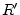, henry/m for 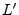, siemens/m for and farad/m for . Writing down the change of voltage and current across a piece with length 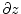 results in the transmission line equations.
|
(1.5) |
| 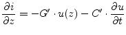 | (1.6) |
Transforming these equations into frequency domain leads to:
Taking equation 1.8 and setting it into the first derivative of equation 1.7 creates the wave equation:
| 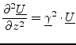 | (1.9) |
Note that both current waves are counted positive in positive direction.
In literature, the backward flowing current wave
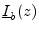 is
sometime counted the otherway around which would avoid the negative sign
within some of the following equations.
Equation 1.11 introduces the characteristic admittance
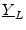. The propagation constant
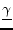 and the
characteristic impedance
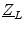 are the two fundamental properties
describing a transmission line.
| 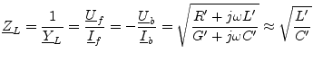 | (1.12) |
Note that is a real value if the line loss (due to and ) is small. This is often the case in reality. A further very important quantity is the reflexion coefficient which is defined as follows:
| 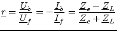 | (1.13) |
The equation shows that a part of the voltage and current wave is reflected back if the end of a transmission line is not terminated by an impedance that equals . The same effect occurs in the middle of a transmission line, if its characteristic impedance changes.
| 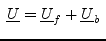 | 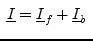 |
| 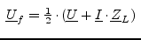 | 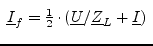 |
| 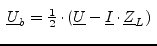 | 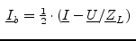 |